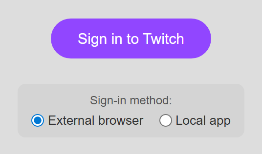

Choose A Twitch Source Mode
| Mode | Best For | Important Difference |
|---|---|---|
| Standard | Basic public chat capture from a Twitch chat or popout page. | Reads what the page exposes. It is simple, but does not provide the full EventSub event set. |
| WebSocket / EventSub | Follows, subscriptions, bits, rewards, raids, stream status, Hype Trains, moderation sync, sending chat, and channel details. | Requires Twitch OAuth. Events are enabled only when the signed-in account, channel role, channel eligibility, and granted scope allow them. |
Desktop App Setup
- Select Add source → Twitch.
- Enter the Twitch channel login used in its URL. For
twitch.tv/examplechannel, enterexamplechannel. - Leave WebSocket selected for the richer EventSub source. Twitch currently defaults to this mode in the app.
- Select Activate source, then Sign in to Twitch.
- Authorize the requested permissions and keep the Twitch source window open.

Browser Extension EventSub Setup
- Install and enable the current Social Stream Ninja extension.
- Open the Twitch EventSub source page.
- Replace
examplechannelin the URL with the channel login you want to monitor. - Select Sign in to Twitch and approve the requested access.
- Keep that page open. Confirm that its User and Channel fields are correct before testing alerts.
https://socialstream.ninja/sources/websocket/twitch.html?channel=CHANNEL_LOGINFor basic Standard capture instead, open the normal Twitch chat or popout chat page and keep chat visible.
What Twitch Requests
Social Stream asks for a user token with permissions needed by the controls and subscriptions it supports. Granting a scope does not make an account a broadcaster or moderator; Twitch still checks the account's role for the selected channel.
| Permission Group | Used For |
|---|---|
| Chat | Read chat, send chat, and list chatters. |
| Followers and subscribers | Follow events, subscriber events, gifted subscriptions, and resub messages. |
| Bits, rewards, and Hype Trains | Cheers, custom Channel Points redemptions, and Hype Train status. |
| Moderation | Message deletion, bans/timeouts, and block synchronization when the account may moderate the channel. |
| Channel management | Read/update title and category, read/manage ads, and display channel metrics. |
See Twitch's official scope reference and EventSub subscription types.
Events The Current Source Handles
- Follows:
new_follower. - Subscriptions:
new_subscriber,resub, andsubscription_gift. - Bits:
cheerwith a donation value. - Channel Points:
reward. - Raids:
raid. - Stream and ad status:
stream_online,stream_offline, andad_break. - Hype Train:
hype_trainbegin, progress, and end updates. - Moderation: ban and message-deletion updates when permitted.
Twitch subscriber events require an eligible Affiliate/Partner channel and broadcaster access. Follow and moderation subscriptions require the signed-in user to be the broadcaster or an authorized moderator, depending on the event.
For downstream alert names and payload fields, use the Events and Alerts Compatibility guide and Event Reference.
First Checks When An Event Is Missing
- Confirm the source page says the correct User and Channel.
- Keep the source page/window open and confirm its chat connection is active.
- If chat works but follows/subs/rewards do not, sign out and authorize again so the current scopes are granted.
- Verify that the signed-in account is the broadcaster or a permitted moderator for that channel.
- Check that the dock and alert overlay use the same Social Stream session ID.
- Use the popup's fake test message or Multi Alerts preview to separate capture problems from overlay problems.
EventSub can deliver a notification more than once. Twitch documents at-least-once delivery. Social Stream includes duplicate protection, but custom API consumers should still deduplicate by event/message identity where possible. See the official EventSub overview.